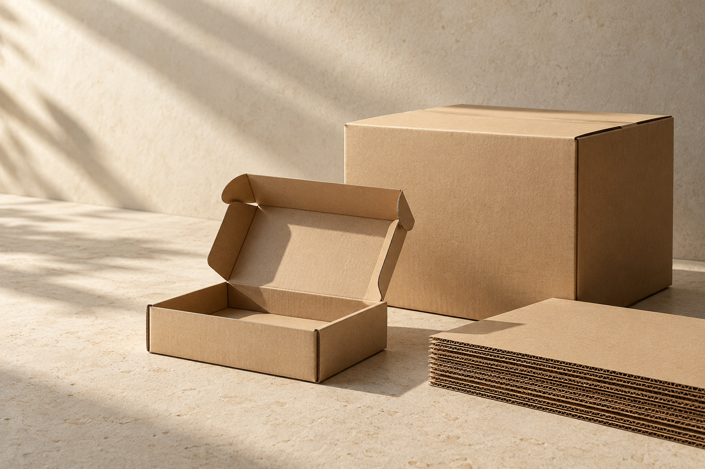

VYROBENÉ NA SLOVENSKU
7-vrstvová lepenka.
Malé aj veľké série.
Kartónové obaly na mieru aj zo 7-vrstvovej lepenky.
Množstvo a konštrukciu prispôsobíme vášmu zadaniu.
Dopytový formulár · rozmery, množstvo aj vlastná grafika.

ATLAS / OBALOVÉ RIEŠENIA
Ilustračný produktový vizuál01 / MATERIÁL
7-vrstvová lepenka.
Možnosť pre náročnejšie balenie vašich produktov.
02 / FLEXIBILITA
Malé aj veľké série.
Objem výroby dohodneme podľa toho, čo potrebujete.
03 / NA MIERU
Obal podľa produktu.
Rozmery, konštrukcia aj vlastná grafika v jednom zadaní.
RIEŠENIE PRE VÁŠ PRODUKTSpoznajte ATLAS ↗